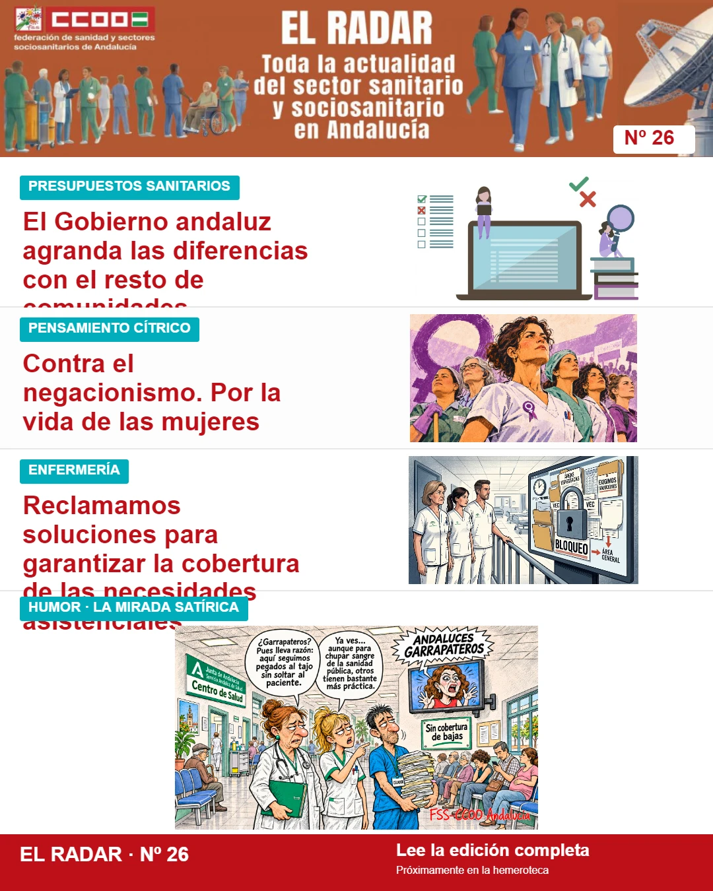

Última edición disponible
Nº 26
Presupuestos sanitarios, Pensamiento Cítrico, Enfermería, noticias provinciales y la mirada satírica.
Leer el Radar nº 26Las ediciones públicas de nuestro boletín, reunidas en un mismo lugar para consultarlas desde el móvil o el ordenador.

Presupuestos sanitarios, Pensamiento Cítrico, Enfermería, noticias provinciales y la mirada satírica.
Leer el Radar nº 26Se añadirán nuevas ediciones tras su aprobación para publicación pública.